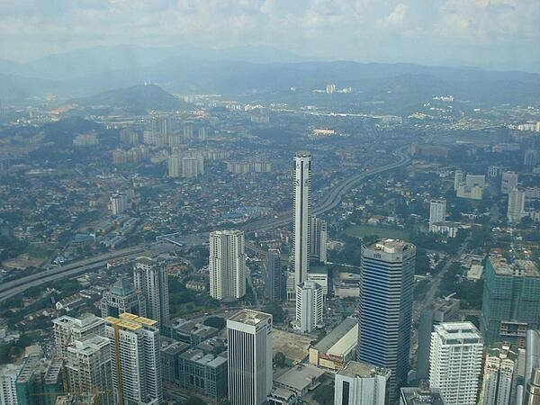
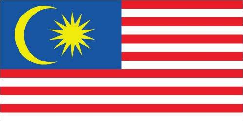

Location
Southeastern Asia, peninsula bordering Thailand and northern one-third of the island of Borneo, bordering Indonesia, Brunei, and the South China Sea, south of Vietnam
Malaysia's location has long made it an important cultural, economic, historical, social, and trade link between the islands of Southeast Asia and the mainland. Through the Strait of Malacca, which separates the Malay Peninsula from the archipelago, flowed maritime trade and with it influences from China, India, the Middle East, and the east coast of Africa.
Malaysia was formed in when the former British colonies of Singapore, as well as Sabah and Sarawak on the northern coast of Borneo, joined the Federation. The first several years of the country's independence were marred by a communist insurgency, Indonesian confrontation with Malaysia, Philippine claims to Sabah, and Singapore's expulsion in .
During the 22-year term of Prime Minister MAHATHIR Mohamad (-), Malaysia was successful in diversifying its economy from dependence on exports of raw materials to the development of manufacturing, services, and tourism. Prime Minister MAHATHIR and a newly formed coalition of opposition parties defeated Prime Minister Mohamed NAJIB bin Abdul Razak's UMNO in , ending over 60 years of uninterrupted rule by UMNO. Since , Malaysia has undergone considerable political upheaval with a succession of coalition governments holding power.
Southeastern Asia, peninsula bordering Thailand and northern one-third of the island of Borneo, bordering Indonesia, Brunei, and the South China Sea, south of Vietnam
| Monsoon | Months |
|---|---|
| Annual Southwest | April to October |
| Annual Northeast | October to February |
A highly uneven distribution with over 80% of the population residing on the Malay Peninsula
| Ethnic Group | Percentage of Population |
|---|---|
| Bumiputera | 62.5% |
| Chinese | 20.6% |
| Indian | 6.2% |
| Non-citizen | 9.8% |
| Other | 0.9% |
| Sex | Median Age |
|---|---|
| Male | 28.9 years |
| Female | 29.6 years |
| Total | 29.2 years |


14 equal horizontal stripes of red (top) alternating with white (bottom). There is a dark blue rectangle in the upper hoist-side corner bearing a yellow crescent and a yellow 14-pointed star. The flag is often referred to as Jalur Gemilang (Stripes of Glory). The 14 stripes stand for the equal status in the federation of the 13 member states and the federal government. The 14 points on the star represent the unity between these entities. The crescent is a traditional symbol of Islam. Blue symbolizes the unity of the Malay people and yellow is the royal color of Malay rulers
Note: The design is based on the flag of the US